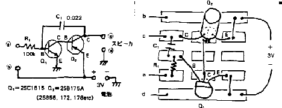
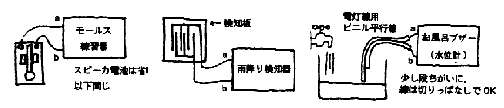
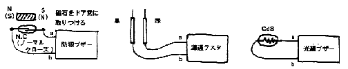
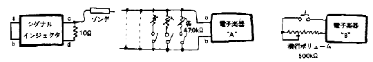
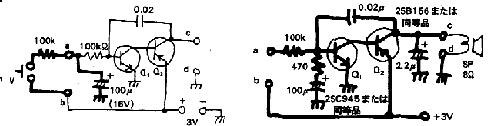

|
|
|  |
| 第１図 弛張発振器回路図 第２図 実体は緯線図 |
第１図のコンデンサC1に抵抗R1を通して充電をしていきます。 その電圧がQ1のスレッシホールド電圧（シリコントランジスタの場合、約
0.5〜0.6V）になったとき、それまでOFFであったQ1がONとなります。
これがトリガ（引き金）になってQ2がONになりスピーカに電流が流れます。
スピーカに電流が流れることによって、Q2のコレクタに電圧が発生します。 この電圧がC1を放電させ、Q1は再びOFFとなります。
そしてまた、C1に充電されて上記の動作を繰り返します。
以上の動作は筧の水をひいて竹の筒を「ポン」と鳴らす「ししおどし」と良く似ています。 この場合、筧の細さがR1の大きさ、竹筒の大きさがC1の大き
さ、と対比する事ができますから、C1.R1共にその値を大きくしていけば放電する周期は長く、周波数的には低い音になっていきます。
基本回路だけなら、第２図に示すように3PのFCZ基板に組み立てる事が出来ます。
Q2はゲルマニュウムトランジスタを使ってください。シリコントランジスタでも働く事は働くのですが音が余り大きくなってくれません。
この弛張発振器はずいぶん沢山の用途に応用できます。
◆モールス練習機（第３図）
端子a,b間にキーを入れてモールスを打つとそれに従い「プープー」という音が聞こえます。
|  |
| 第３図 モールス練習機 第４図 雨降り検知器 第５ 図 お風呂ブザー |
◆雨降り検知器（第４図）
第４図のような雨滴検知板を用意してこれを屋外に設置しておきます。 雨が降り出すとa,b間に導通が起こり、発振が始まります。
◆お風呂ブザー（第５図）
第５図の用にa,b間に、電灯線用のビニール並行線を取付け、あらかじめ風呂桶の希望する水位の位置に設置しておいてください。 水面が上がり、所定の
位置に達するとブザーが鳴ります。 ビニル線の先端は少し段違いに切っておくと誤動作を少なくすることができます。
|  |
| 第６図 防犯ブザー 第７図 導通テスター 第 ８図 光線ブザー |
◆防犯ブザー（第６図）
第６図の様にドアとドア枠（窓と窓枠）の間にマグネットとマグネットスイッチを設置すれば、ドアが開いたときブザーが鳴ります。
マグネットスイッチにはN.C（ノルマルクローズ）とN.O(ノルマルオープン）の二種類があります。
N.Cはマグネットを離した状態で「閉」（クローズ、ON）になっていて、マグネットを近づけるると「開」（オープン，OFF）になるものをいいます。
N.OはN.Cの反対動作をするものです。
◆導通テスタ（第７図）
第７図のように配線すれば「導通テスタ」として使用できます。
被測定回路の抵抗が大きいほど周波数は低くなり、導通がなければ音は発しません。
テスト棒の「黒」に（＋）が出てくるのは普通のテスタの極性に合わせたものです。
◆光線ブザー（第８図）
第８図の様にa,b間にCdSを取り付けると周囲が暗いときには低い音、明るくなると高い音になります。
これに手をかざしてメロディーが引けたら、あなたは天才。
|  |
| 第９図 シグナルインジェクタ 第１０図 電子楽器 第１１図 横 行ボリュームで音程を調整 |
◆シグナルインジェクタ（第９図）
第９図に示す様にa,b間をショートし、c,d間に入っていたスピーカをはずして47Ωの抵抗に変えてからcにテスト棒を付けるとシグナルインジェクタ
になります。 シグナルインジェクタに関する使用法の説明は、#036
RF/AFノイズインジェクタの項を参照してください。
◆電子楽器（第10図）
第10図の様に半固定抵抗とスイッチを音の数だけ並べ、ド・レ・ミ… と調律しておけば電子楽器の出来上がり。 音質はスコットランドのバッグパイプの
様な音です。 そのためかスコットランド民謡が良く似合います。
第11図の回路は横行ボリュームの位置とスイッチを押すタイミングで演奏します。 こちらのほうがコストは安く上がります。
|  |
| 第１２図 電子サイレン 第１３図 ピロピロブ ザー |
◆電子サイレン（第12図）
第12図は電子サイレンの回路です。
スイッチを押すと100kΩを通して47μFのコンデンサに除除に充電されて行き、それと共に発振周波数も高くなっていきます。
スイッチから手を離すと47μFから除除に放電して行き、発振周波数が段々と下がっていきます。
二つの100kΩの抵抗と、47μFのコンデンサの値をいろいろ変えてみると楽しい音が発生します。
◆ピロピロブザー（第13図）
第13図の様に改造すると、発振音が断続して「ピロピロピロ…」という感じの音になります。
スピーカと並列に入れる2.2μFが小さすぎると断続の周期が早くなり過ぎて、音が濁った感じとなります。
また、大きすぎると断続しなくなってしまいます。
実際にスピーカから出る音の音量はオリジナル回路と比べて、相当大きく、お風呂ブザーなどのアラームとして使う場合にはオリジナル回路より優れていると
いえるでしょう。